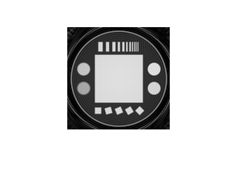
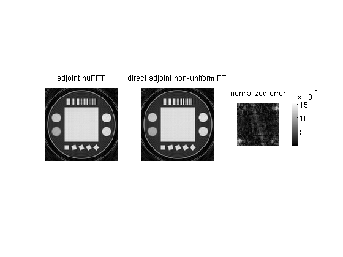

nuFFT mex interface demo
This example demonstrates how to use the mex interface of the nuFFT.
Contents
After compilation, the nuFFT mex library is located in the /bin subdirectory of the nuFFT.
addpath ../bin
load ../data/noncartesian_phantom.mat
We now have the coordinates and density compensation factors of a 9216-sample 2D spiral trajectory, and k-space data of a phantom on that trajectory:
- kcoord - k-space coordinates of non-uniform 2D samples
- dcf - density compensation factors
- kdata - k-space data samples
- imagedirect - exact non-uniform FT of the k-space samples, onto a 128x128 grid, computed in the direct, slow way (computation takes about a minute using one-threaded C++ code)
Create a nuFFT implementation
In order to create a nuFFT implementation, we will need to stack the trajectory coordinates in one vector:
trajectory = kcoord'; trajectory = trajectory(:);
Note that the coordinates should all be in the range [-0.5 0.5] in each axis.
We also need the square root of the density compensation factors.
sqrtdcf = sqrt(dcf);
We will create a nuFFT implementaton with the following parameters:
Nthreads = 1; imagesize = [128 128]; maxaliasingerror = 1e-3; alpha = 2; % oversampling ratio resampling_method = 'spm'; nuFFT_imp = nufft_implementation('double',Nthreads, imagesize, maxaliasingerror, alpha, resampling_method, trajectory, sqrtdcf);
** create nuFFT implementation ** computing implementation data: 0.0834372s initializing external libraries: 1.81198e-05s tuning: 0.011183s deleting nuFFT implementation
Adjoint nuFFT
Now we will perform an adjoint nuFFT on the non-uniform k-space data.
Note that in order to receive an image after the adjoint nuFFT, the input non-uniform k-space data should be density compensated with just the square root of the dcfs.
kdata_dc = kdata.*sqrtdcf;
image_data = nuFFT_imp.adjoint(1,kdata_dc);
** adjoint nuFFT ** adjoint transformation: 0.00487614s
We will compare the adjoint nuFFT result to the result of a direct non-uniform Fourier transform (non-fast)
e = get_image_errors(imagedirect,image_data);
max error: 0.0014982
The error between the direct nuFT and the nuFFT matches the input maximum aliasing error with which we created the nuFFT implementation.
figure subplot(131) imshowz(image_data) title('adjoint nuFFT') subplot(132) imshowz(imagedirect) title('direct adjoint non-uniform FT') subplot(133) imshowz(e) colorbar title('normalized error')
Forward nuFFT
kdata_dc2 = nuFFT_imp.forward(1, image_data);
** forward nuFFT ** forward transformation: 0.0114589s
Check if the forward and adjoint transforms are compatible
kdata_dc2'*kdata_dc-image_data(:)'*image_data(:)
ans =
-3.63797880709171e-12 + 2.48689957516035e-14i
That's close enough to zero. If you really want to make sure this works, try it with random data (don't use a random trajectory unless you compute the dcfs for it!).
Clearing an implementation
When an implementation is cleared from memory, it's destructor is invoked to free the memory associated with it.
clear nuFFT_imp
deleting nuFFT implementation
Multithreading
We will now create the nuFFT implementation and perform the transformations using six threads.
nuFFT_imp = nufft_implementation('double',6, [128 128], 1e-3, 2, 'spm', trajectory, sqrtdcf); image_data = nuFFT_imp' * kdata_dc; kdata_dc2 = nuFFT_imp * image_data;
** create nuFFT implementation ** computing implementation data: 0.0741758s initializing external libraries: 1.50204e-05s tuning: 0.00805593s ** adjoint nuFFT ** adjoint transformation: 0.00297189s ** forward nuFFT ** forward transformation: 0.00497508s
Note the above usage of operator notation for applying an adjoint and forward nuFFT on data.
Save implementation to file
impfilename = '../out/demo_nufft_imp.imp'; if ~isdir('../out'), mkdir('../out'), end nuFFT_imp.create_impfile(impfilename);
** create nuFFT implementation file** writing implementation to file: 0.0040381s
Reading an implementation from a file
nuFFT_imp = nufft_implementation('double',1,impfilename);
image_data = nuFFT_imp.adjoint(1,kdata_dc);
figure
imshowz(image_data)
** create nuFFT implementation ** loading implementation from file: 0.00858212s initializing external libraries: 2.00272e-05s tuning: 0.013103s deleting nuFFT implementation ** adjoint nuFFT ** adjoint transformation: 0.00819182s
Create another nuFFT implementation with different parameters
nuFFT_imp2 = nufft_implementation('double',1, [128 128], 1e-2, 1.5, 'spm', trajectory, sqrtdcf);
** create nuFFT implementation ** computing implementation data: 0.047246s initializing external libraries: 1.50204e-05s tuning: 0.00490403s deleting nuFFT implementation
image_data2 = nuFFT_imp2.adjoint(1,kdata_dc);
** adjoint nuFFT ** adjoint transformation: 0.00319195s
e = get_image_errors(imagedirect,image_data2);
max error: 0.015481
The error again matches the input maximum aliasing error.
figure subplot(131) imshowz(image_data2) title('adjoint nuFFT') subplot(132) imshowz(imagedirect) title('direct adjoint non-uniform FT') subplot(133) imshowz(e) colorbar title('normalized error')